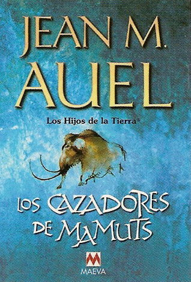

Los cazadores de mamuts (Los hijos de la tierra, #3)
Reseña por Jorge I. Zuluaga

Ver reseña en GoodReads (necesita cuenta)
Después de casi completar la saga de los Hijos de la Tierra, que me ha tomado leer más de medio año, he querido hacer un alto para escribir una reseña conjunta de los libros 3 (Los Cazadores de Mamuts), 4 (Las Llanuras de Tránsito) y 5 (Los refugios de piedra).
Todavía estoy a la espera de leer la última novela del conjunto, el Libro 6, pero creo que pasará un buen tiempo antes de que anime a hacerlo por las razones que mencionó más abajo.
Advertencia: es posible que quiénes no han leído algunos de los libros encuentren en esta reseña uno que otro spoiler. Bueno, en realidad, y como argumento abajo, a partir del libro 4 (Las llanuras de Tránsito) no hay mucho que spoilear (¡diablos! ¡esto es en si mismo un spoiler!)
Como ya comenté en las reseñas que escribí para las primeras dos partes de la saga, el libro 1 (El clan de los Oso Cavernario) y el libro 2 (El Valle de Los Caballos), ambos excelentes, no sé muy bien por qué aspecto de la asombrosa saga de Jean Auel sentirme más admirado.
Si admirar la increíble capacidad de su autora para recrear, casi desde cero, las culturas pueblos del paleolítico superior, culturas de las que solo tenemos unos cuántos restos de herramientas, vestuario, comida y algunas expresiones artísticas.
En Los Hijos de la Tierra, conocemos, a través de una pormenorizada y vivida descripción y por las acciones mismas de sus personajes, detalles de las costumbres, alimentación, formas de relacionarse al interior de las comunidades y fuera de ellas, así como las creencias religiosas (hipotéticas por supuesto), la medicina y la tecnología de esos pueblos.
¡Un atrevido pero enriquecedor esfuerzo de recreación literaria!
También podría señalar como lo más admirable de la saga el increíble nivel de detalle con el que Auel describe la fauna, la geografía y las condiciones ambientales del continente Euroasiático durante la última edad de hielo. La historia se desarrolla precisamente hace 30 000 años, poco antes del máximo glacial, un tiempo en el que la Tierra, en especial los continentes estaban cubiertos hasta un 25% por hielo.
Hay apartes completos de los libros que te hacen pensar que estás leyendo una crónica natural de aquel tiempo en lugar de una novela.
Plantas, animales, paisajes, climas, son descritos con tanto rigor y a tal nivel de detalle que a veces es difícil mantener la atención en el texto y no verse tentados a saltar estos apartes para saber más de las aventuras de Jondalar, Ayla y sus animales (los protagonistas de la saga).
Si de mí dependiera, como autora o casa editorial, extraería estos extensos pasajes -que a pesar de la impaciencia que suscitan son también muy bellos y a la larga importantes para la historia- y armaría con ellos un texto de divulgación científica independiente.
Como manifesté también en mis otras reseñas, no puedo creer que este libro se presente a veces como si fuera del género de literatura juvenil. ¡De juvenil tiene muy poco!. A pesar de que no lo catalogaría como una obra de gran profundidad literaria, la saga aborda un espectro amplio de emociones humanas, desde el poder, las relaciones comunitarias, el racismos y el especismo, las relaciones filiales, incluso las relaciones sexoafectivas, temas todos de una complejidad suficiente como para, repito, evitar encajarlo en un libro juvenil.
Mientras que los dos primeros libros se encargan de introducir los modos de vida y las creencias de pueblos conformados por Homo neardentalensis (los clanes, como los llama la autora), y específicamente aquellos que habitaban euroasia en la última edad de hielo, además de, como lo hace en el libro 2, por Homo sapiens, los libros 3 a 5 duplican el número de experiencias humanas descritas en la primera parte de la saga. Mis respetos por la capacidad de Auel para construir de forma tan realista las ficciones sobre tantos pueblos.
La saga se podría resumir diciendo que es la historia de un viaje, el viaje de una sapiens, la inolvidable Ayla, quien fue críada entre neardentalensis y que posteriormente se reencuentra con los de su especie. A lo largo de los 5 libros somos testigos del viaje de encuentros y desencuentros entre (por lo menos) las dos especies humanas que habitaron el continente europeo hace 30 000 años.
Sorprende la magnitud espacial del viaje. Si bien toda la saga no abarca más de unos 14 años, el recorrido, como se intuye por la descripción de los lugares y en algunas de las notas de la autora al final de los últimos libros (¡que buenas notas!) abarca casi toda Europa y una parte de Asia.
Vamos ahora con los aspectos negativos.
La lectura de la saga podría terminar, sin muchas perdidas, en el libro 3 (Los Cazadores de Mamuts). Hasta ese libro, la historia mantiene un nivel apropiado de novedad y riqueza argumental del que, lamentablemente, carecen los libros 4 y 5. Si me pidieran un consejo les diría que se eviten por completo estos últimos dos libros y dejen la saga después de la experiencia de Jondalar y Ayla en el pueblo de los cazadores de mamuts.
En el libro 2 de la saga descubrimos la vena de la autora para describir con lujo de detalles las experiencias sexuales de las y los protagonistas de la saga.
Es admirable la manera como esas experiencias aumentan en un principio el valor de la historia. Personalmente comparto con la autora la idea de que el placer sexual y la reproducción tuvo que haber jugado un rol central en las creencias de los pueblos paleolíticos. También creo, como lo sugiere la historia posterior, que ese papel del sexo pudo haberse "engavetado" cuando la humanidad hizo la transición de pequeñas comunidades a grandes poblados hasta ciudades y reinos.
Sin embargo, en los libros 3, 4 y 5, las relaciones sexuales se convierten en protagonistas excesivos de la historia. A veces me sentí leyendo un libro erótico y no una novela histórica. Llegue incluso a pensar que a estos libros solo les faltaba una portada con hombres de cabello largo y cuerpo musculosos acompañados por mujeres semidesnudas y cuerpos torneados, un estereotipo del género de las novelas eróticas que casi todos hemos visto por ahí.
Son incontables las descripciones pormenorizadas (sin perdida del más mínimo detalle) de los encuentros sexuales, especialmente entre los protagonistas, que se realizan a lo largo de estos tres libros. A tal punto, en el que empiezan a ser sospechosos.
No quisiera con esto revelar una cierta vena puritana (tal vez la tengo), pero he leído otras novelas que también llegan a este nivel de detalles, pero la verdad, no lo hacen tan extensa y abundantemente. Además, la mayoría de las descripciones pormenorizadas de los actos sexuales no agregaban casi nada a la historia, excepto tal vez en el libro 2.
La novela 4 (Las Llanuras del Tránsito) es casi completamente irrelevante para la saga. Tal vez vale la pena como forma de recapitular toda la historia de las novelas 1 a 3, pero en realidad no se agregan personajes nuevos de verdadera relevancia, ni aspectos de la trama (excepto posiblemente un solo encuentro) que valgan la pena. Para un libro tan largo, como lector, lo considere un verdadero desperdicio de páginas y de tiempo.
Finalmente, la novela 5 retoma el tono general de los primeros 3 libros, en el que aparecen personajes y situaciones altamente relevantes, aunque la mayor parte de la novela también insista en recapitular, hasta el cansancio, las mismas historias de las novelas 1 a 3. Es tal el nivel de redundancia que me pregunté muchas veces mientras leí si estos últimos libros no habrían sido escritos más bien motivados por los afanes de la industria editorial en lugar de un deseo verdadero por darle cierre a la historia (tal vez un libro más, sin tanto jaleo y repetición, habría sido suficiente).
En síntesis. Una gran saga hasta el libro 3. La mejor manera de aproximarse a la vida y las posibles (y ricas) culturas del paleolítico superior. Una obra de una enorme riqueza descriptiva de un período desaparecido de la Tierra. Un poco recargada de un erotismo innecesario (especialmente después del libro 2) y que hacia el final, tal vez por afanes editorial, no hace sino repetirse.